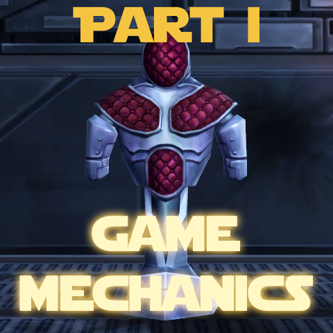
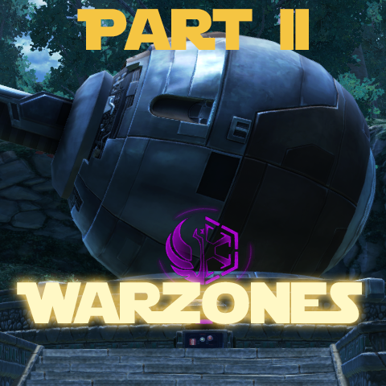

Hi, my name is Ne'laa, a regstar scrub from The Red Eclipse and this is my guide intended to help new players perform better in PvP. If you have any questions, found an error or have some ideas for improvement, feel free to contact me in the game, send me (Schoock) a PM on the official forums or open an issue here on GitHub.
The contents of this guide have been updated to game patch 5.9.3 (2nd of October, 2018).
Because the guide has become very long and hard to navigate on one page, it has been proken up into 2 parts. The first part deals with game mechanics in general (and is possibly useful to PvE'ers too), while the second part discusses the warzones themselves. Click on the images below to navigate to the respective part.
 For making this guide possible by providing invaluable data, resources, being my lab rats for experimenting with various mechanics, pointing out errors and suggesting improvements, in no particular order: